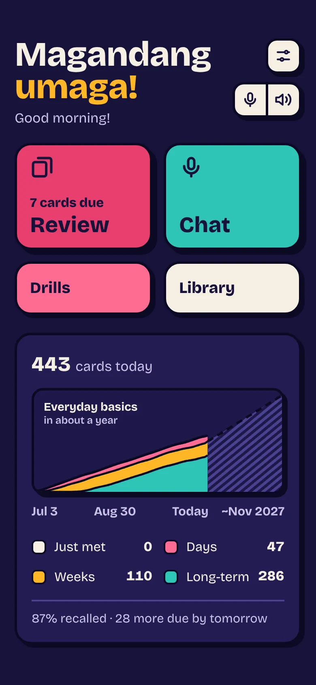
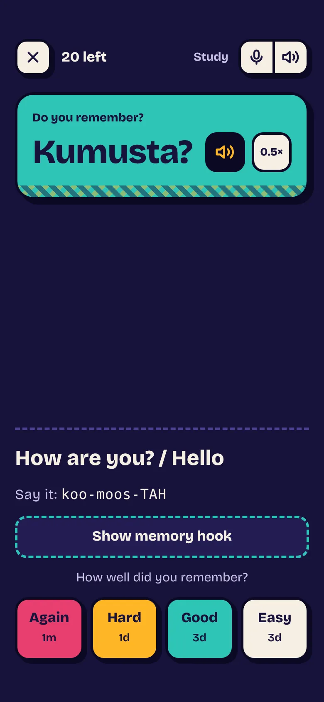
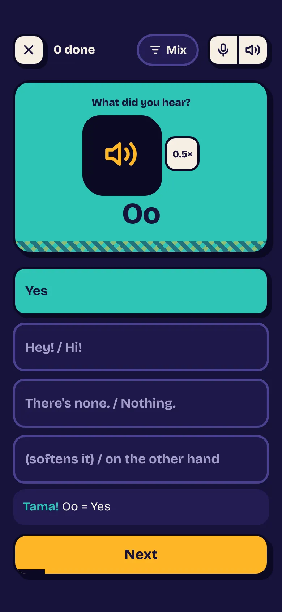
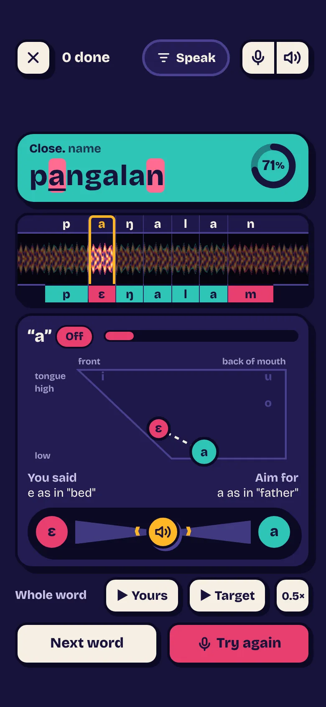
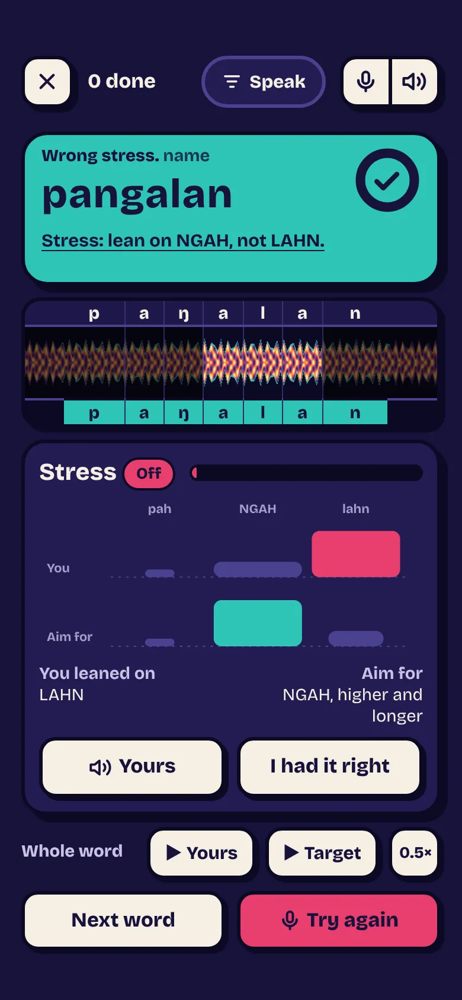
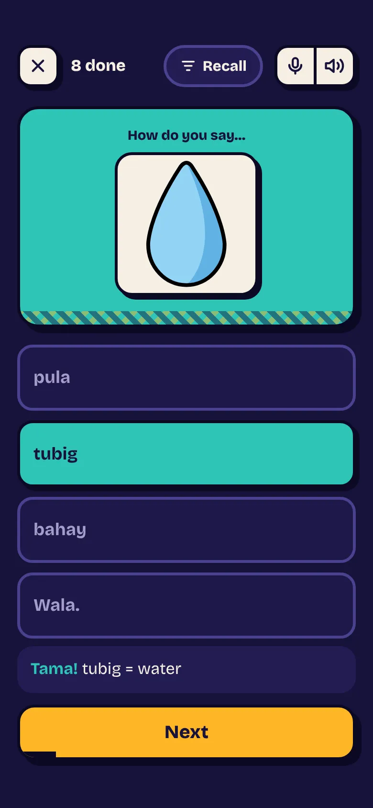
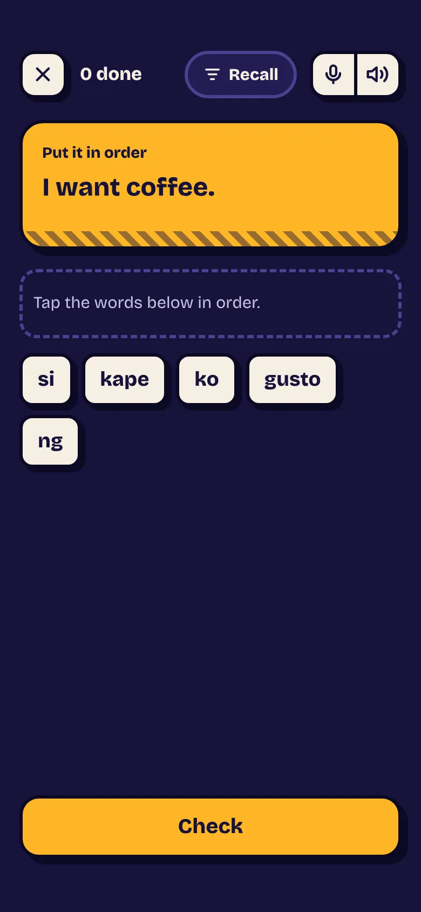
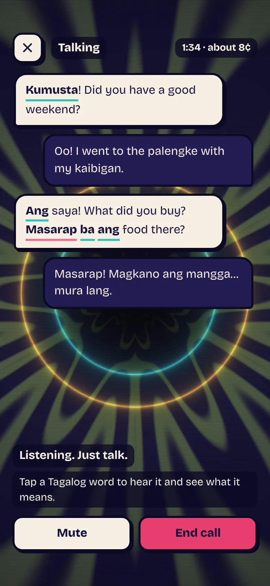
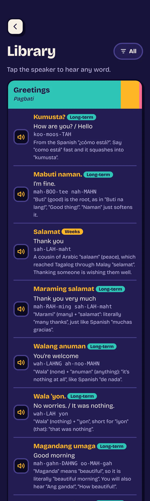

Tagalog for everyday life, on your phone
Learn Tagalog out loud.
A few minutes a day. Pinoy Prompt brings each word back just before you'd forget it, listens when you say it, and shows you which sound to fix. It teaches how people really talk, Taglish included.
- Kumusta?How are you?
- Salamat poThank you (polite)
- Tara na!Let's go!

- No streaks, no points. Practice when it suits you. Nothing nags.
- No account. Your progress stays on your phone.
- Works offline. Add it to your Home Screen and take it anywhere.
Aral · Study
Each word comes back just before you'd forget it
One button, and it keeps going until you stop. Study asks what's due first, weakest first, then a few new words a day. Every word is asked three ways, each on its own schedule: read it, hear it, and say it from the English. Knowing a word one way says little about the others.
Drills are for practice beyond the schedule, as long as you like. Miss a card there and it comes back sooner:
- Next question
- After 1 other
- After 3
- After 6


Bigkas · Speak
Say it, then see every sound
Speak cards show a word and listen to you say it. The sounds you made are laid over your recording, letter by letter: the ones you nailed, the ones that were close, and the one to fix, with where your tongue went and where to aim.
For single words it also hears which syllable you leaned on, and you can overrule it if you know you had it right. Drag along the word or the waveform to step through each sound, and hold to hear the one you were aiming for. It all runs on your phone, so your voice never leaves it.


Alaala · Memory
Turn any card over to see how well you know it
Tap a drill card and it flips. The back says how likely the word is to come to mind right now, how that chance slides until Study asks again, and how often Drills will pick it, so a weak card visibly gets more practice.
Below that: how far each way of asking has climbed, from just met to long-term, and every gap between reviews.
Tap the phone to turn the card over.
Larawan · Pictures
Some words come back as a picture
Coffee, fish, a house, the colour red: a word with an obvious picture of its own is sometimes asked from the picture instead of the English. Same card, same schedule, so the word ties to the thing and not just to a translation.
Only words whose picture couldn't be mistaken for another card get one.

Pundasyon · Building blocks
Small words first, so every phrase is one new word
A handful of words build hundreds of sentences: I, you, my, your, this, already, just. They come first, and a phrase waits until the words it's made of have stuck. By the time you meet "Gusto ko ng kape," only "kape" is new.
Once a pattern is learned, it comes back as a fresh sentence to build from tiles or to say from the English.
- akoI
- komy
- moyour
- itothis
- naalready
- langjust

Iba pa · Variations
Learn the pattern, not one sentence
Once a phrase has settled, it's sometimes asked as a variation with one part swapped. It only uses words you already know, and if you miss it, the hint says which phrase it came from and what changed.
You learned
Magkano ito?
How much is this?
- Magkano iyan?How much is that?
- Magkano ang kape?How much is the coffee?
You learned
Libre ka ba?
Are you free?
- Libre ka ba bukas?Are you free tomorrow?
Boses · Voices
Real voices, at full speed and slowed down
Every word and phrase has audio in two natural voices, picked at random each time you hear it, so you learn the word rather than one recording. Each has a half-speed version for catching every sound, and they're all kept on your phone for offline use.
Have a listen. Tap again for another voice.
- Nasaan ang banyo?Where's the bathroom?
- Gusto ko ng kape.I'd like some coffee.
- Magkano ito?How much is this?
- Ingat!Take care!
Usapan · Chat
Talk it through, in Taglish
Chat is a spoken conversation with an AI that speaks English and swaps in the Tagalog you know, only where it fits, with more as you learn more. Say it back however you like. Mistakes aren't marked; you just hear the right form in the reply.
Tap any Tagalog word in the transcript to hear it and see what it means. Chat uses your own OpenAI key, about 5¢ a minute, and never touches your review schedule.

Aklatan · Library
Everything there is to learn, and how well you know it
The Library lists every word and phrase by topic, each with its sound, meaning and memory hook, plus the sentence patterns, sounds and everyday know-how, like when to say Kuya and Ate.
Each topic's heading fills up in the colours of the memory chart, so you can see at a glance what's long-term, what's still days old and what's still to come.

Karaniwang salita · Common words
The 100 words you'll hear all day
Alongside the phrases for getting by, it covers the hundred most common Tagalog words that phrases alone wouldn't teach: the little ones that tie ideas together and colour a sentence, and plain everyday ones like tao (person) and araw (day). Nothing is left out for being blunt; you learn what people actually say.
- taposand then
- kahiteven if
- paranglike, as if
- medyoa bit
- dawthey say
- lagialways
- Sayang!What a waste!
Tara na!
Let's go. Open it on your phone, then add it to your Home Screen to use it like an app, offline.
Open Pinoy Prompt- Open it in Safari or Chrome on your phone.
- Tap Share, or the browser's menu.
- Choose Add to Home Screen.